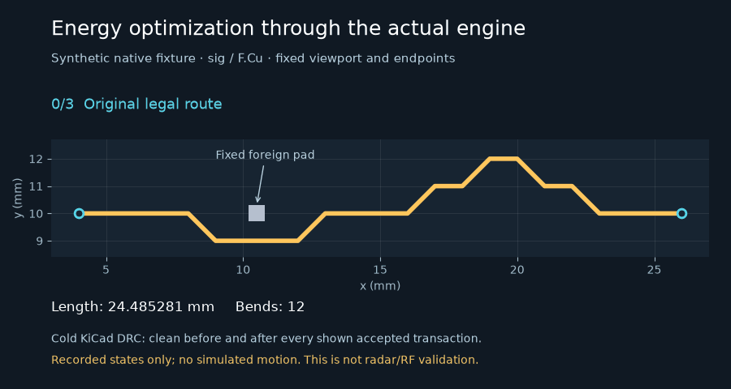

Opt-in energy-track integration¶
PNR_GLOSS=1 PNR_GLOSS_ENERGY=1 enables the energy proposal generator inside the
existing native gloss pass. Both defaults remain off. PNR_GLOSS_ENERGY replaces
only the gloss pull-tight proposal step; normalize, dekink, corridor and the
outer loop’s native gate retain their existing behavior.

The animation is a synthetic native fixture, not the radar board. It shows four
recorded states with no interpolated geometry: 24.485281 → 22.438324 mm and
12 → 2 bends across three accepted transactions. Every shown transaction passed
cold KiCad DRC, and the phase-end six-component objective stayed [0,0,0,0,0,0].
Engine path¶
pnr.gloss.Settings.energyand--energyworker flag are default-off. An unset/false energy flag preserves the pre-feature settings digest exactly. The default path never imports Shapely or the new geometry modules.pnr.energy_track.proposeadapts an already eligible native chain topnr.energy_track_geometry.Planner. Native item-grid lookup, the optional local layer grid and exact native segment/contact predicates constrain the proposal. No candidate, net or branch is selected by hand.The search grows a corridor around the existing legal polyline, samples relevant clearance-offset contours, and finds an endpoint-to-endpoint span on a finite witness-progress roadmap. Reverse remaining-length costs guide incoming-edge-state energy search. It is not a literal Steiner solver or a guarantee of a global geometric optimum.
Energy is length in mm plus 0.15 mm per bend by default. Curvature weight is explicit (default zero). Length, endpoints, width, layer, net, vias, native contact, clearance, turn, homotopy, guard and group-cap rules remain hard.
The existing transactional controller applies proposals to disposable checkpoints, checks native geometry and facts, runs cold KiCad DRC, and then accepts, splits or rejects. Its phase-end bisection/rollback and native-loop outer gate are still required. Worker output remains provisional until the controller has completed the cold-DRC and electrical acceptance gates.
Accepted moves invalidate quiet chains through a dynamic layer grid. Plane refill symmetric-difference boxes also invalidate affected chains. The energy gloss step re-inventories until no improvement or an existing transaction/time budget stops it. Global inventory serialization, board reconstruction and native validation remain global work; this is not an end-to-end sublinear-complexity claim.
Exact eligibility and refusal boundaries¶
Ordinary native signal-chain eligibility is inherited from the glosser. Power, paired and length-matched routes remain excluded. SI chains and group-owned copper are additionally refused by the energy proposer, even if the older SI option is enabled. Locked copper, vias, pads, footprints, group membership, board outline and zone definitions cannot silently change.
An unlocked, ungrouped foreign plane is provisional only when its exact net
has an explicit IR contract. The candidate oracle excludes only the validated
zone IDs, not all copper on their net. An uncontracted or protected plane stays
an obstacle. Any spec that claims such a plane as a dependency is refused
before application (energy:protected_or_uncontracted_plane).
With energy enabled, joint refill occurs before native shape recheck. The full post-refill oracle checks clearance again. Homotopy excludes only the validated regenerated zones; fixed copper still cannot switch side. Protected zone fills are included in the immutable checksum. Full configured IR reports, native connectivity, pad entry, skew and reference facts accompany every checkpoint.
Local edits that do not change plane copper retain existing no-regression gate semantics; unchanged unrelated pre-existing unknown pair or failed-rail facts do not become a new claim of success. If any plane fill changes, stricter gates apply:
Every actually changed plane net needs measured, passing IR within its original budget. New opens, unknown values or missing contracts refuse it.
Existing passing rails cannot become failing. Unrelated existing failed rails must remain exactly unchanged; they are never relabeled as passing.
Pairs must be qualified, with finite measured skew before and after. Missing or null skew is a refusal, not zero skew.
A board with declared RF/SI contracts or an RF macro requires external verification for a changed plane. This integration has no full-wave verifier callback, so such joint-refill edits are refused with
energy:rf_si_verification_required. Existing reference-shape checks alone are not presented as RF certification.
The historical radar single-chain experiment remains useful geometric evidence but is not production-promotable under these stricter missing-evidence gates. There is no paired shove/serpentine proposal solver in this change.
Dependencies and runtime ABI¶
Shapely 2.1.2 is pinned in Bazel/controller/runtime locks. The image’s KiCad
workers use Python 3.12, while the controller uses 3.11. A separate, hash-locked
NumPy/Shapely set is installed under /opt/energy-kicad, never into system
Python. Only enabled workers add PNR_ENERGY_SITE_PACKAGES to their import
path, after checking its Python-version marker. Wrong ABI fails closed.
An existing headless KiCad environment may instead supply matching Shapely and
NumPy normally. Missing geometry dependencies produce an explicit
energy_dependency_unavailable inventory result and preserve the input;
they do not trigger a fallback that skips native/electrical gates.
Reproduce and validate¶
Focused hermetic targets:
bazel test --config=lowmem \
//hardware/pnr:energy_track_geometry_test \
//hardware/pnr:energy_track_spatial_test \
//hardware/pnr:energy_track_integration_test
With a supported headless KiCad Python/CLI configured, the native test also covers actual accepted improvements, disabled no-op byte identity, and an uncontracted-plane dependency refused before application:
bazel test --config=lowmem //hardware/pnr:energy_track_native_test
To regenerate the truthful animation from an actual saved clean fixture run:
python tools/animate_energy_track.py --run-dir ENERGY_RUN \
--out docs/feature-animations/energy-track-native.gif
The renderer requires optional Matplotlib/Pillow and consumes only recorded
accepted transactions. It refuses a non-clean or phase-end-failed run. It uses
gloss_fixture’s known fixed foreign pad and labels the synthetic scope.